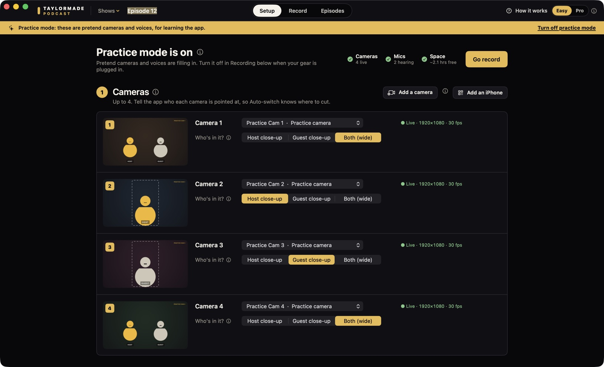
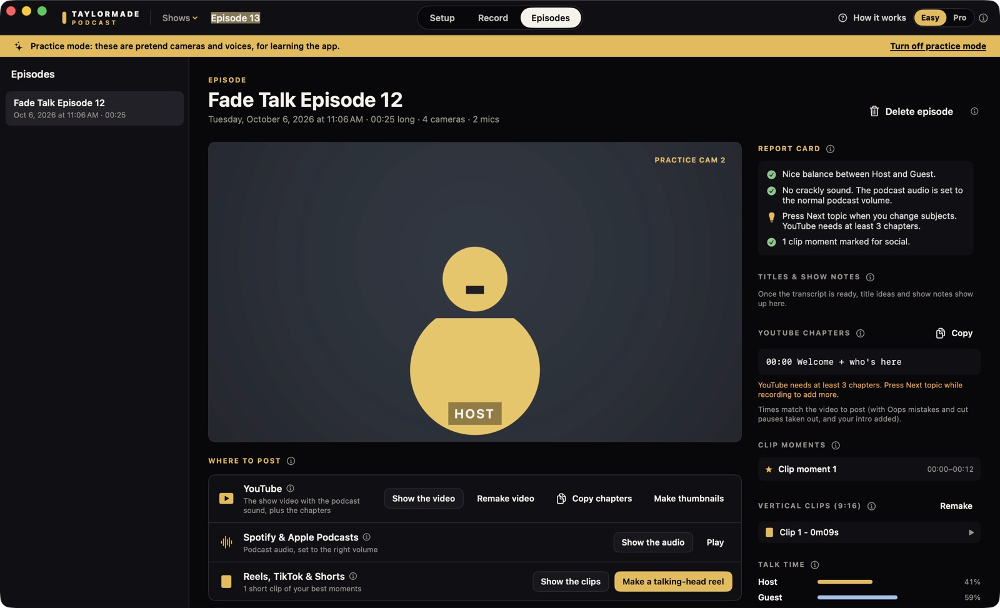

Free beta Mac app macOS 15 or later
Your podcast studio, on one Mac.
Taylormade Podcast records up to four cameras and two mics at once and cuts to whoever is talking. When you stop, you get a video ready for YouTube, podcast audio, vertical clips of the moments you marked, and edit files. Free while it's in beta.
Free beta · No account · Notarized by Apple · Recordings stay on your Mac · How to install
On your phone? Taylormade Podcast runs on a Mac. Send this page to your Mac, or open taylormadecreative.net/podcast-app on it.

Press Record. Get an episode.
WHAT IT DOESEvery angle, saved
Each camera and each mic is saved as its own file, all starting at the same moment, plus one finished show that switches between them.
It cuts for you
Auto-switch follows whoever is talking. Press 1 to 4 to pick a camera yourself, or show everyone side by side.
Ready to post
A video for YouTube with chapters from your run sheet, podcast audio set to the right volume, and vertical clips of the moments you marked.
Edit files
Open the episode in Premiere Pro, Final Cut Pro or DaVinci Resolve with every camera and mic already lined up.
Run the show
A run sheet of topics, a teleprompter, a cue card, and silent hand signals that pop up on your guest's iPhone.
A safety net for sound
If a wireless mic cuts out, the app finds the gap and fills it from the Mac's own mic, so the episode doesn't go silent.
Works with the gear you have
CAMERAS · MICSiPhones
Best with the free Taylormade Camera app: each iPhone joins over Wi-Fi, records its own full-quality copy, and shows that person their own prompter. Any iPhone also works through Continuity Camera.
Cameras
Canon, Fujifilm, Nikon, Panasonic, Sony and more, over a USB cable (if the camera has a webcam setting) or HDMI through a capture card. Shooting log? The app turns it into normal color for the show and clips.
Webcams
Plug in and pick it. The MacBook camera works too.
Mics
Up to two USB mics or wireless mic receivers, one per person. The Mac's own mic records a spare in the background.
Set it up once. See everything it made.
SETUP · EPISODES · CLICK TO ENLARGE



Install the beta
FREE · 5 STEPSDownload
Click Download for Mac and open TaylormadePodcast.dmg from your Downloads.
Drag it in
Drag Taylormade Podcast into your Applications folder, then open it from there.
Open it
Your Mac asks if you're sure, because it came from the internet: click Open. Then allow the camera and microphone, and local network if you'll use iPhones as cameras.
Try it
No gear handy? Turn on Practice mode and try everything with pretend cameras and voices.
Add an iPhone
Optional. Install Taylormade Camera on the iPhone. On the Mac, open Setup and click Add an iPhone to show a code. On the iPhone, open Taylormade Camera, tap Podcast and scan it. You only pair once.
If something goes wrong
My Mac says it can't open the app
Open System Settings › Privacy & Security, scroll down, and click Open Anyway next to Taylormade Podcast.
I clicked Don't Allow for the camera, mic or local network
Open System Settings › Privacy & Security, then Camera, Microphone or Local Network, and turn Taylormade Podcast on. Quit and reopen the app.
My camera doesn't show up
In the app, open Setup and click Add a camera. It has the steps for iPhones, webcams, and cameras over USB or HDMI, with menu paths for Canon, Fujifilm, Nikon, Panasonic and Sony.
It can't find my iPhones
Put the Mac and the iPhones on the same Wi-Fi (not a guest network), and make sure Local Network is allowed for both apps.
Questions
BETA · FEEDBACK · UPDATESIs Taylormade Podcast free?
Yes, it's free while it's in beta. Everything you record is saved on your Mac, so it's yours to keep.
What does beta mean?
It works, and I'm still fixing things. Try Practice mode first. For a show you can't record again, keep a backup recorder running.
Do I need the Taylormade Camera iPhone app?
No. Any camera you can connect to a Mac works. The free Taylormade Camera app turns iPhones into wireless cameras that each keep a full-quality copy, and shows each person their own prompter.
What Mac do I need?
macOS 15 Sequoia or later, on an Apple silicon or Intel Mac. Transcripts and clip captions need macOS 26. Episode titles and show notes also need Apple Intelligence.
Where do my recordings go?
To the Movies folder on your Mac (Movies › Taylormade Podcast), or any folder you pick. Nothing is uploaded.
How do I send feedback?
In the app, choose Help › Send Beta Feedback. It opens an email with your Mac and camera details already filled in. Or email taylormademd@gmail.com.
How do I get updates?
When a new beta is out, a gold Update button shows up at the top of the app. Quit the app, open the new download and drag it into Applications. Choose Replace when your Mac asks. Your recordings and settings stay put.
Is there a Windows version?
No. Taylormade Podcast is a Mac app.
Your recordings stay on your Mac. The privacy page lists everything the app does and doesn't do.
Free while it's in beta.
Record your next episode on the cameras you already have, and tell me what to fix.